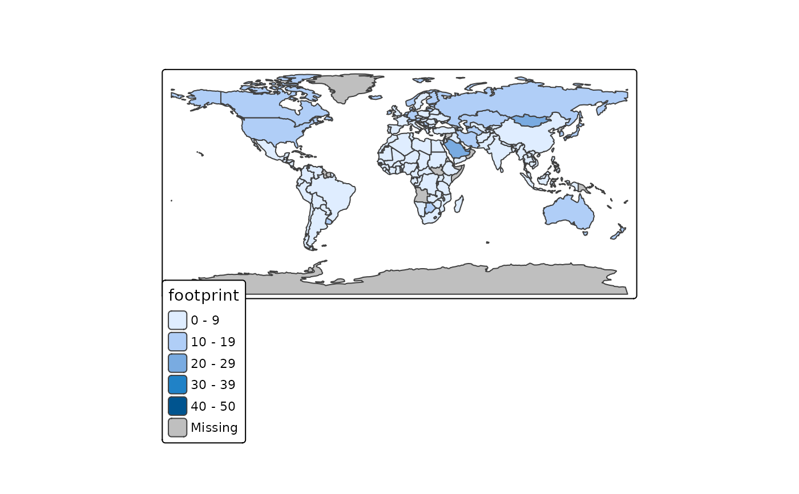
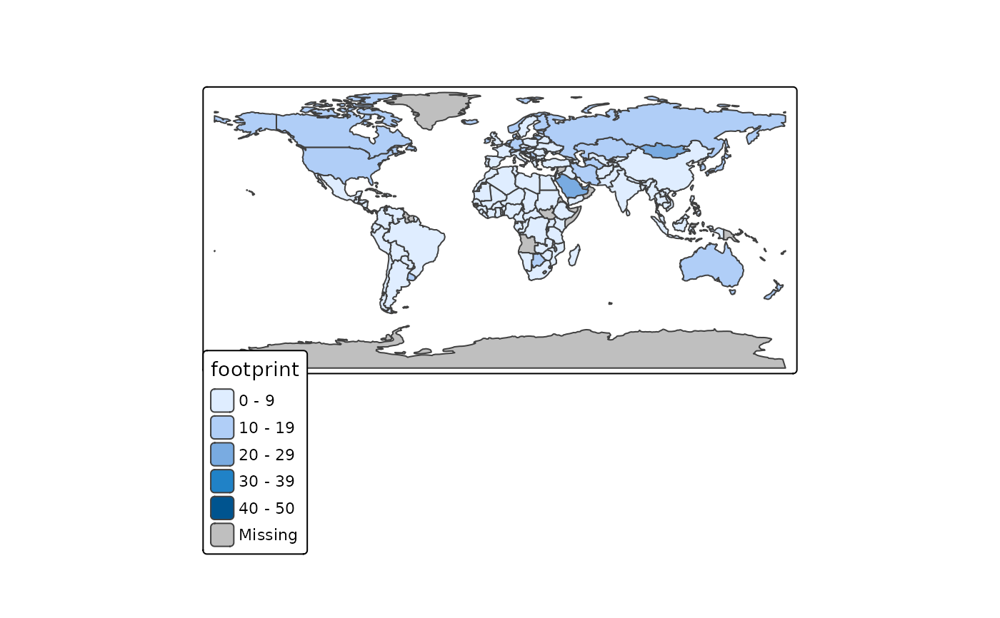

Get or set global options for tmap. The behaviour of tmap_options is similar to options: all tmap options are retrieved when this function is called without arguments. When arguments are specified, the corresponding options are set, and the old values are silently returned as a list. The function tmap_options_reset is used to reset all options back to the default values (also the style is reset to "white"). Differences with the default values can be shown with tmap_options_diff. The function tmap_options_save can be used to save the current options as a new style. See details below on how to create a new style.
tmap_options(
...,
unit,
limits,
max.categories,
max.raster,
basemaps,
basemaps.alpha,
overlays,
overlays.alpha,
qtm.scalebar,
qtm.minimap,
qtm.mouse.coordinates,
show.messages,
show.warnings,
output.format,
output.size,
output.dpi,
output.dpi.animation,
design.mode = NULL,
check.and.fix
)
tmap_options_diff()
tmap_options_reset()
tmap_options_save(style)Arguments
| ... | options from |
|---|---|
| unit | this is the default value for the |
| limits | this option determines how many facets (small multiples) are allowed for per mode. It should be a vector of two numeric values named |
| max.categories | in case |
| max.raster | the maximum size of rasters, in terms of number of raster cells. It should be a vector of two numeric values named |
| basemaps | default basemaps. Basemaps are normally configured with |
| basemaps.alpha | default transparency (opacity) value for the basemaps. Can be a vector of values, one for each basemap. |
| overlays | default overlay tilemaps. Overlays tilemaps are shown as front layer (in contrast to basemaps, which are background layers), so they are only useful when they are semi-transparent. Like basemaps, a vector of tilemaps is expected, or |
| overlays.alpha | default transparency (opacity) value for the overlay maps. Can be a vector of values, one for each overlay map. |
| qtm.scalebar | should a scale bar be added to interactive maps created with |
| qtm.minimap | should a minimap be added to interactive maps created with |
| qtm.mouse.coordinates | should mouse coordinates (and zoom level) be shown in view mode with |
| show.messages | should messages be shown? |
| show.warnings | should warnings be shown? |
| output.format | The format of the static maps saved with |
| output.size | The size of the static maps saved with |
| output.dpi | The default number of dots per inch for |
| output.dpi.animation | The default number of dots per inch for |
| design.mode | Not used anymore; the design mode can now be set with |
| check.and.fix | Logical that determines whether shapes ( |
| style | style name |
Details
The options can be divided into three parts: one part contains the arguments from tm_layout, one part contains the arguments from tm_view, and one part contains options that can only be set with tmap_options. Observe that the options from tm_layout and tm_view can also be set with those functions. It is recommended to use tmap_options when setting specific options during global session. However, options that are only relevant for a specific map can better be set with tm_layout or tm_view.
A new style can be created in two ways. The first approach is to use the function tmap_options_save, which takes a snapshot of the current tmap options. E.g., tmap_options_save("my_style") will save the current tmap options as a style called "my_style". See the examples in which a style called "red" is created. The second way to create a style is to create a list with tmap options and with a attribute called style. This approach is illustrated in the last example, in which a style called "black" is created.
The newly created style, say "my_style", will be accessible globally via tmap_style("my_style") and + tm_style("my_style") until the R session is restarted or tmap is reloaded. In order to save the style for future use or sharing, obtain the option list as follows: my_style <- tmap_options() and save the object my_style in the usual way. Next time, the style can be loaded simply by running tmap_options(my_style), which corresponds to the second way to create a style (see the paragraph above).
See also
tm_layout, tm_view, and tmap_style
Examples
# load data
data(World)
# get current options
str(tmap_options())
#> List of 111
#> $ unit : chr "metric"
#> $ limits : Named num [1:2] 64 4
#> ..- attr(*, "names")= chr [1:2] "facets.plot" "facets.view"
#> $ max.categories : num 30
#> $ max.raster : Named num [1:2] 1e+06 1e+06
#> ..- attr(*, "names")= chr [1:2] "plot" "view"
#> $ show.messages : logi TRUE
#> $ show.warnings : logi TRUE
#> $ output.format : chr "png"
#> $ output.size : num 49
#> $ output.dpi : num 300
#> $ output.dpi.animation : num 100
#> $ check.and.fix : logi FALSE
#> $ title : logi NA
#> $ scale : num 1
#> $ title.size : num 1.3
#> $ bg.color : chr "white"
#> $ aes.color : Named chr [1:8] "grey85" "grey40" "grey60" "black" ...
#> ..- attr(*, "names")= chr [1:8] "fill" "borders" "symbols" "dots" ...
#> $ aes.palette :List of 3
#> ..$ seq: chr "YlOrBr"
#> ..$ div: chr "RdYlGn"
#> ..$ cat: chr "Set3"
#> $ attr.color : chr "black"
#> $ sepia.intensity : num 0
#> $ saturation : num 1
#> $ frame : logi TRUE
#> $ frame.lwd : num 1
#> $ frame.double.line : logi FALSE
#> $ asp : logi NA
#> $ outer.margins : num [1:4] 0.02 0.02 0.02 0.02
#> $ inner.margins : logi NA
#> $ between.margin : num 0.5
#> $ outer.bg.color : NULL
#> $ fontface : chr "plain"
#> $ fontfamily : chr ""
#> $ compass.type : chr "arrow"
#> $ earth.boundary : logi FALSE
#> $ earth.boundary.color : NULL
#> $ earth.boundary.lwd : num 1
#> $ earth.datum : num 4326
#> $ space.color : NULL
#> $ legend.show : logi TRUE
#> $ legend.only : logi FALSE
#> $ legend.outside : logi NA
#> $ legend.outside.position: chr "right"
#> $ legend.outside.size : num 0.3
#> $ legend.position : NULL
#> $ legend.stack : chr "vertical"
#> $ legend.just : chr [1:2] "left" "bottom"
#> $ legend.width : num 0.4
#> $ legend.height : num 0.9
#> $ legend.hist.height : num 0.3
#> $ legend.hist.width : num 0.4
#> $ legend.title.color : NULL
#> $ legend.title.size : num 1.1
#> $ legend.title.fontface : NULL
#> $ legend.title.fontfamily: NULL
#> $ legend.text.color : NULL
#> $ legend.text.size : num 0.7
#> $ legend.text.fontface : NULL
#> $ legend.text.fontfamily : NULL
#> $ legend.hist.size : num 0.7
#> $ legend.format :List of 12
#> ..$ fun : NULL
#> ..$ scientific : logi FALSE
#> ..$ digits : logi NA
#> ..$ big.num.abbr : Named num [1:2] 6 9
#> .. ..- attr(*, "names")= chr [1:2] "mln" "bln"
#> ..$ prefix : chr ""
#> ..$ suffix : chr ""
#> ..$ text.separator : chr "to"
#> ..$ text.less.than : chr [1:2] "Less" "than"
#> ..$ text.or.more : chr [1:2] "or" "more"
#> ..$ text.align : logi NA
#> ..$ text.to.columns: logi FALSE
#> ..$ html.escape : logi TRUE
#> $ legend.frame : logi FALSE
#> $ legend.frame.lwd : num 1
#> $ legend.bg.color : logi NA
#> $ legend.bg.alpha : num 1
#> $ legend.hist.bg.color : logi NA
#> $ legend.hist.bg.alpha : num 1
#> $ title.snap.to.legend : logi NA
#> $ title.position : chr [1:2] "left" "top"
#> $ title.color : NULL
#> $ title.fontface : NULL
#> $ title.fontfamily : NULL
#> $ title.bg.color : logi NA
#> $ title.bg.alpha : num 1
#> $ panel.show : logi NA
#> $ panel.labels : logi NA
#> $ panel.label.size : num 1
#> $ panel.label.color : chr "black"
#> $ panel.label.fontface : NULL
#> $ panel.label.fontfamily : NULL
#> $ panel.label.bg.color : chr "grey80"
#> $ panel.label.height : num 1.25
#> $ panel.label.rot : num [1:2] 90 0
#> $ main.title : logi NA
#> $ main.title.size : num 1.5
#> $ main.title.color : chr "black"
#> $ main.title.fontface : NULL
#> $ main.title.fontfamily : NULL
#> $ main.title.position : chr "left"
#> $ attr.outside : logi FALSE
#> $ attr.outside.position : chr "bottom"
#> $ attr.outside.size : logi NA
#> $ attr.position : chr [1:2] "right" "bottom"
#> $ attr.just : chr [1:2] "left" "bottom"
#> $ basemaps : chr [1:3] "Esri.WorldGrayCanvas" "OpenStreetMap" "Esri.WorldTopoMap"
#> $ basemaps.alpha : num [1:3] 1 1 1
#> $ overlays : NULL
#> $ overlays.alpha : num 1
#> $ qtm.scalebar : logi TRUE
#> $ qtm.minimap : logi FALSE
#> $ qtm.mouse.coordinates : logi TRUE
#> $ alpha : logi NA
#> [list output truncated]
#> - attr(*, "style")= chr "white"
# get current style
tmap_style()
#> current tmap style is "white"
#> other available styles are: "gray", "natural", "cobalt", "col_blind", "albatross", "beaver", "bw", "classic", "watercolor"
# plot map (with default options)
tm_shape(World) + tm_polygons("HPI")
 # change style to cobalt
tmap_style("cobalt")
#> tmap style set to "cobalt"
#> other available styles are: "white", "gray", "natural", "col_blind", "albatross", "beaver", "bw", "classic", "watercolor"
# observe the changed options
tmap_options_diff()
#> current tmap options (style "cobalt") that are different from default tmap options (style "white"):
#> $bg.color
#> [1] "#002240"
#>
#> $aes.color
#> fill borders symbols dots lines text na null
#> "#0088FF" "#002240" "#FF9D00" "#FF9D00" "#FFEE80" "white" "grey60" "grey40"
#>
#> $aes.palette
#> $aes.palette$seq
#> [1] "YlGn"
#>
#> $aes.palette$div
#> [1] "RdYlGn"
#>
#> $aes.palette$cat
#> [1] "Set3"
#>
#>
#> $attr.color
#> [1] "white"
#>
#> $basemaps
#> [1] "CartoDB.DarkMatter"
#>
#> $basemaps.alpha
#> [1] 0.5
#>
# plot the map again
tm_shape(World) + tm_polygons("HPI")

##############################
# define red style
##############################
# change the background color
tmap_options(bg.color = "red")
# note that the current style is modified
tmap_style()
#> current tmap style is "cobalt (modified)"
#> other available styles are: "white", "gray", "natural", "cobalt", "col_blind", "albatross", "beaver", "bw", "classic", "watercolor"
# observe the changed options
tmap_options_diff()
#> current tmap options (style "cobalt (modified)") that are different from default tmap options (style "white"):
#> $bg.color
#> [1] "red"
#>
#> $aes.color
#> fill borders symbols dots lines text na null
#> "#0088FF" "#002240" "#FF9D00" "#FF9D00" "#FFEE80" "white" "grey60" "grey40"
#>
#> $aes.palette
#> $aes.palette$seq
#> [1] "YlGn"
#>
#> $aes.palette$div
#> [1] "RdYlGn"
#>
#> $aes.palette$cat
#> [1] "Set3"
#>
#>
#> $attr.color
#> [1] "white"
#>
#> $basemaps
#> [1] "CartoDB.DarkMatter"
#>
#> $basemaps.alpha
#> [1] 0.5
#>
# save the current options as style "red"
tmap_options_save("red")
#> current tmap options saved as style "red"
# plot the map again
tm_shape(World) + tm_polygons("HPI")
# change style to cobalt
tmap_style("cobalt")
#> tmap style set to "cobalt"
#> other available styles are: "white", "gray", "natural", "col_blind", "albatross", "beaver", "bw", "classic", "watercolor"
# observe the changed options
tmap_options_diff()
#> current tmap options (style "cobalt") that are different from default tmap options (style "white"):
#> $bg.color
#> [1] "#002240"
#>
#> $aes.color
#> fill borders symbols dots lines text na null
#> "#0088FF" "#002240" "#FF9D00" "#FF9D00" "#FFEE80" "white" "grey60" "grey40"
#>
#> $aes.palette
#> $aes.palette$seq
#> [1] "YlGn"
#>
#> $aes.palette$div
#> [1] "RdYlGn"
#>
#> $aes.palette$cat
#> [1] "Set3"
#>
#>
#> $attr.color
#> [1] "white"
#>
#> $basemaps
#> [1] "CartoDB.DarkMatter"
#>
#> $basemaps.alpha
#> [1] 0.5
#>
# plot the map again
tm_shape(World) + tm_polygons("HPI")

##############################
# define red style
##############################
# change the background color
tmap_options(bg.color = "red")
# note that the current style is modified
tmap_style()
#> current tmap style is "cobalt (modified)"
#> other available styles are: "white", "gray", "natural", "cobalt", "col_blind", "albatross", "beaver", "bw", "classic", "watercolor"
# observe the changed options
tmap_options_diff()
#> current tmap options (style "cobalt (modified)") that are different from default tmap options (style "white"):
#> $bg.color
#> [1] "red"
#>
#> $aes.color
#> fill borders symbols dots lines text na null
#> "#0088FF" "#002240" "#FF9D00" "#FF9D00" "#FFEE80" "white" "grey60" "grey40"
#>
#> $aes.palette
#> $aes.palette$seq
#> [1] "YlGn"
#>
#> $aes.palette$div
#> [1] "RdYlGn"
#>
#> $aes.palette$cat
#> [1] "Set3"
#>
#>
#> $attr.color
#> [1] "white"
#>
#> $basemaps
#> [1] "CartoDB.DarkMatter"
#>
#> $basemaps.alpha
#> [1] 0.5
#>
# save the current options as style "red"
tmap_options_save("red")
#> current tmap options saved as style "red"
# plot the map again
tm_shape(World) + tm_polygons("HPI")
 # the specified arguments of tm_layout and tm_view will override the options temporarily:
tm_shape(World) + tm_polygons("HPI") + tm_layout(bg.color="purple")
# the specified arguments of tm_layout and tm_view will override the options temporarily:
tm_shape(World) + tm_polygons("HPI") + tm_layout(bg.color="purple")
 # when tm_style_ is called, it will override all options temporarily:
tm_shape(World) + tm_polygons("HPI") + tm_layout(bg.color="purple") + tm_style("classic")
#> Note that tm_style("classic") resets all options set with tm_layout, tm_view, tm_format, or tm_legend. It is therefore recommended to place the tm_style element prior to the other tm_layout/tm_view/tm_format/tm_legend elements.
# when tm_style_ is called, it will override all options temporarily:
tm_shape(World) + tm_polygons("HPI") + tm_layout(bg.color="purple") + tm_style("classic")
#> Note that tm_style("classic") resets all options set with tm_layout, tm_view, tm_format, or tm_legend. It is therefore recommended to place the tm_style element prior to the other tm_layout/tm_view/tm_format/tm_legend elements.
 # reset all options
tmap_options_reset()
#> tmap options successfully reset
# check style and options
tmap_style()
#> current tmap style is "white"
#> other available styles are: "gray", "natural", "cobalt", "col_blind", "albatross", "beaver", "bw", "classic", "watercolor", "red"
tmap_options_diff()
#> current tmap options are similar to the default tmap options (style "white")
##############################
# define black style
##############################
# create style list with style attribute
black_style <- structure(
list(
bg.color = "black",
aes.color = c(fill = "grey40", borders = "grey40",
symbols = "grey80", dots = "grey80",
lines = "white", text = "white",
na = "grey30", null = "grey15"),
aes.palette = list(seq = "plasma", div = "PiYG", cat = "Dark2"),
attr.color = "white",
panel.label.color = "white",
panel.label.bg.color = "grey40",
main.title.color = "white"
),
style = "black"
)
# assign the style
tmap_options(black_style)
#> tmap options successfully loaded as style "black"
# observe that "black" is a new style
tmap_style()
#> current tmap style is "black"
#> other available styles are: "white", "gray", "natural", "cobalt", "col_blind", "albatross", "beaver", "bw", "classic", "watercolor", "red"
# plot the world map again, this time with the newly created black style
tm_shape(World) +
tm_polygons("HPI")
# reset all options
tmap_options_reset()
#> tmap options successfully reset
# check style and options
tmap_style()
#> current tmap style is "white"
#> other available styles are: "gray", "natural", "cobalt", "col_blind", "albatross", "beaver", "bw", "classic", "watercolor", "red"
tmap_options_diff()
#> current tmap options are similar to the default tmap options (style "white")
##############################
# define black style
##############################
# create style list with style attribute
black_style <- structure(
list(
bg.color = "black",
aes.color = c(fill = "grey40", borders = "grey40",
symbols = "grey80", dots = "grey80",
lines = "white", text = "white",
na = "grey30", null = "grey15"),
aes.palette = list(seq = "plasma", div = "PiYG", cat = "Dark2"),
attr.color = "white",
panel.label.color = "white",
panel.label.bg.color = "grey40",
main.title.color = "white"
),
style = "black"
)
# assign the style
tmap_options(black_style)
#> tmap options successfully loaded as style "black"
# observe that "black" is a new style
tmap_style()
#> current tmap style is "black"
#> other available styles are: "white", "gray", "natural", "cobalt", "col_blind", "albatross", "beaver", "bw", "classic", "watercolor", "red"
# plot the world map again, this time with the newly created black style
tm_shape(World) +
tm_polygons("HPI")
 # reset all options
tmap_options_reset()
#> tmap options successfully reset
# reset all options
tmap_options_reset()
#> tmap options successfully reset